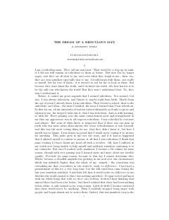

TDInson hayotining mazmuni va haqiqatni izlash haqidagi chuqur falsafiy hikoya.
Fyodor Dostoevskiyning ushbu falsafiy hikoyasida o'zini jamiyatda begona va kulgili deb bilgan insonning o'z joniga qasd qilishga qaror qilishi va tushida ko'rgan g'ayritabiiy voqealar tasvirlanadi. Asar inson ruhiyati, haqiqatni izlash va hayotning mazmuni haqidagi chuqur mulohazalarni o'z ichiga oladi.